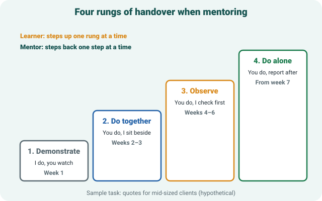

K9 · Leadership and developing others › Level 4 Proficient
Mentor a colleague with a 3-month plan and four rungs of handover
This lesson completes Sheet 5: Mentoring plan. Print template. The person you mentor can take Plan your first 90 days and Ask for and use feedback at the same time.
1. Objectives
- Write a 3-month mentoring plan: 2–3 measurable goals and a schedule of one-to-one meetings.
- Choose the right rung of handover for each task: demonstrate, do together, observe, do alone.
2. Retrieval warm-up
- What are the four steps for resolving a disagreement?
- Why should you restate a challenger's view before you reply?
Answers
- Facts; interpretations; shared criteria; test or escalate.
- To show you have understood. People who feel understood relax and listen in return.
Review: Resolve professional disagreements.
3. Explanation
Mentoring means helping someone improve over many weeks. You do not do the work for them. You help them become able to do it.
Step 1. Agree goals together. Sit down with the person. Choose 2–3 things they want to be able to do after 3 months. Each goal must be measurable. Example: "prepare quotes for medium-sized clients alone, with fewer than 1 error per quote".
Step 2. Hand work over in 4 rungs. Each task climbs the rungs, faster or slower depending on the person.
- Demonstrate: you do it, they watch. Say out loud why you do each step.
- Do together: they do it, you sit beside them and give hints when needed.
- Observe: they do it alone, and you check the result before it goes out.
- Do alone: they do it and report back. You check only when asked.

Step 3. Meet one to one regularly. 30 minutes every week or two. The learner prepares: what they did, where they got stuck, what they want to ask.
Ask before you tell. When they ask a question, do not answer at once. Ask back: "How were you planning to do it?" If they are on the right track, let them go ahead. They remember longer when they work it out themselves.
Give feedback on behaviour. Say what you saw, its effect, and a suggestion for next time. Avoid comments on personality, such as "you're so careless".
Sheet 5. Mentoring plan
- 2–3 measurable goalsChosen together with the learner.
- Tasks and current rungDemonstrate, do together, observe, do alone.
- One-to-one scheduleDate, time, who prepares what.
- Progress notesEvidence, not impressions.
Good mentoring also helps you. Explaining your work to someone else forces you to understand it more deeply.
4. Workplace example
Hypothetical scenario. Clara is a senior general accountant at a construction company. She is asked to mentor Zoe, an accountant who joined 2 months ago.
They sit down for 30 minutes. Zoe wants to do two things alone after 3 months. One: reconcile supplier balances each month without missing an invoice. Two: prepare the quarterly tax estimate for Clara to approve.
Clara places each task on a rung. Supplier reconciliation: Zoe has done it together once, so she moves to observe. Quarterly tax: Zoe has never done it, so it starts at demonstrate.
When Zoe asks how to handle an invoice with the wrong amount, Clara asks back: "What do you think we should do?" Zoe suggests calling the supplier to confirm. Clara agrees and lets Zoe make the call.
In the second reconciliation, Zoe misses 3 invoices. Clara says: "This month's sheet is missing 3 invoices that came by email. If we miss them, the reported balances are wrong. Next time, check the inbox too before you close."
By month three, Zoe reconciles supplier balances alone, with no missing invoices.
Why this works: Zoe helped choose the goals, and they are measurable. Each task is on the right rung. The feedback is about the work, with its effect and a suggestion.
5. Practice
Hypothetical scenario. You are a sous-chef at a restaurant. You are asked to mentor Max, a new kitchen assistant. Max already knows basic food preparation. He cannot yet make the main stock, and he has never checked the morning deliveries alone.
Write 2 measurable goals for 3 months. Choose the starting rung for each task. Write one behaviour-based feedback sentence for this situation: Max left delivered meat out of the fridge for 40 minutes.
Hint 1
A measurable goal needs a standard. For example: how many times in a row must the stock pass the head chef's taste test?
Hint 2
The feedback sentence has three parts: what you saw, its effect, a suggestion for next time.
Model answer
- Goal 1: make the main stock alone, meeting the head chef's taste standard 5 times in a row. Starting rung: demonstrate.
- Goal 2: check deliveries alone using the checklist, recording temperature and use-by dates every day for 2 weeks. Starting rung: do together, since Max already knows food preparation.
- One-to-one: 20 minutes after the Monday lunch shift each week.
- Feedback: "This morning the delivered meat sat outside the fridge for 40 minutes. Meat left at room temperature spoils quickly, and customers could get food poisoning. Next time, put it in the fridge first, then check the paperwork."
(The figures are hypothetical.)
6. Self-check
Choose an answer. Every option has an explanation.
Question 1. Which mentoring goal is measurable?
-
Not quite. Confidence is a feeling. Two people could judge it very differently.
-
Correct. Correct. It has a task, a number, a condition and a time, so it can be checked.
-
Not quite. How well is hard to check. Name what the person will be able to do.
Question 2. The learner has done a task correctly 3 times with you beside them. What is the next rung?
-
Not quite. They can already do it with you there. Going back to demonstrating slows progress.
-
Correct. Correct. You step back but can still catch errors before they reach the client.
-
Not quite. Skipping the observe rung lets errors slip out.
Question 3. The learner asks: "The client wants another 5% off. What should I say?" What should you say first?
-
Correct. Correct. Asking first makes them think. If they are on the wrong track, you can still correct it.
-
Not quite. Answering at once solves today's problem, but they do not learn how to think it through.
-
Not quite. Doing it for them stops their progress and adds to your own workload.
Question 4. Which feedback is about behaviour?
-
Not quite. This is a comment on personality. The listener gets defensive and does not know what to change.
-
Correct. Correct. It has what was seen, its effect and a concrete suggestion.
-
Not quite. This does not say what needs to change.
7. Reflection
- When a colleague asks you something, do you usually answer at once or ask how they plan to do it?
- Which task are you "doing for" someone else? Which rung is it on?
8. Real-world application
In the next 7 days, choose someone you could mentor, formally or informally. Complete Sheet 5 with them. Book your first one-to-one.
9. Metadata
| skill | K9 · Leadership and developing others |
|---|---|
| level | Level 4 · Proficient |
| group | N4 |
| framework_map | WEF: Talent management; Leadership and social influence; SkillsFuture CCS: Developing People; NACE: Leadership; CSfW: 2b Connect and work with others; LifeComp: S3 Collaboration (reference only) |
| original | Vietnamese version |
| updated | 2026-11-14 |
Finish the lesson
Mark it as done and the site suggests reviews after 1, 3 and 7 days. The data stays on your device only.
Suggested reviews: